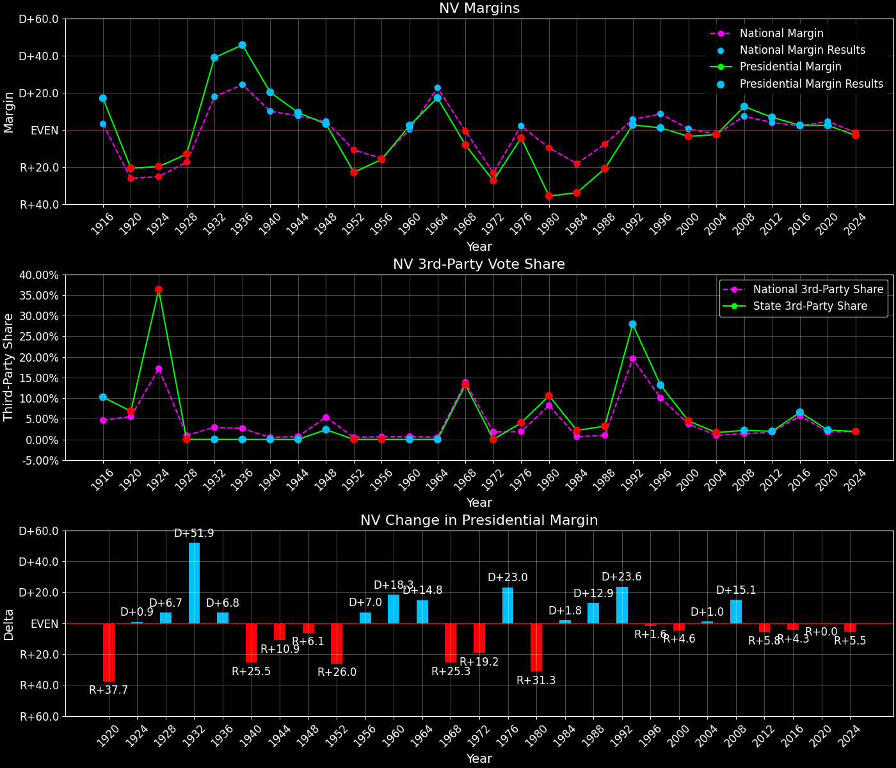

Nevada (NV) — Statewide

Margins · 3rd-Party share · Pres. deltas

Relative margins · Relative 3rd-Party · Rel. deltas
Nevada (NV) — Total Data
| Year | D | R | State Margin | Nat. Margin | Rel. Margin | Total votes | EVs |
|---|---|---|---|---|---|---|---|
| 1964 | 79,339(58.6%) | 56,094(41.4%) | D+17.2 | D+22.6 | R+5.4 | 135,433 | 3 |
| 1968 | 60,598(39.3%)(Δ -18,741) | 73,188(47.5%)(Δ 17,094) | R+8.2(Δ R+25.3) | R+0.7(Δ R+23.3) | R+7.5(Δ R+2.0) | 154,218(Δ 18,785) | 3 |
| 1972 | 66,016(36.3%)(Δ 5,418) | 115,750(63.7%)(Δ 42,562) | R+27.4(Δ R+19.2) | R+23.1(Δ R+22.4) | R+4.2(Δ D+3.2) | 181,766(Δ 27,548) | 3 |
| 1976 | 92,479(45.8%)(Δ 26,463) | 101,273(50.2%)(Δ -14,477) | R+4.4(Δ D+23.0) | D+2.1(Δ D+25.2) | R+6.4(Δ R+2.2) | 201,876(Δ 20,110) | 3 |
| 1980 | 66,666(26.9%)(Δ -25,813) | 155,017(62.5%)(Δ 53,744) | R+35.6(Δ R+31.3) | R+9.7(Δ R+11.8) | R+25.9(Δ R+19.5) | 247,885(Δ 46,009) | 3 |
| 1984 | 91,655(32.0%)(Δ 24,989) | 188,770(65.8%)(Δ 33,753) | R+33.9(Δ D+1.8) | R+18.2(Δ R+8.5) | R+15.7(Δ D+10.2) | 286,667(Δ 38,782) | 4 |
| 1988 | 132,738(37.9%)(Δ 41,083) | 206,040(58.9%)(Δ 17,270) | R+20.9(Δ D+12.9) | R+7.7(Δ D+10.5) | R+13.2(Δ D+2.4) | 350,067(Δ 63,400) | 4 |
| 1992 | 189,148(37.4%)(Δ 56,410) | 175,828(34.7%)(Δ -30,212) | D+2.6(Δ D+23.6) | D+5.6(Δ D+13.3) | R+2.9(Δ D+10.3) | 506,318(Δ 156,251) | 4 |
| 1996 | 203,974(43.9%)(Δ 14,826) | 199,244(42.9%)(Δ 23,416) | D+1.0(Δ R+1.6) | D+8.5(Δ D+3.0) | R+7.5(Δ R+4.6) | 464,279(Δ -42,039) | 4 |
| 2000 | 279,978(46.0%)(Δ 76,004) | 301,575(49.5%)(Δ 102,331) | R+3.5(Δ R+4.6) | D+0.5(Δ R+8.0) | R+4.1(Δ D+3.4) | 608,970(Δ 144,691) | 4 |
| 2004 | 397,190(47.9%)(Δ 117,212) | 418,690(50.5%)(Δ 117,115) | R+2.6(Δ D+1.0) | R+2.5(Δ R+3.0) | R+0.1(Δ D+3.9) | 829,587(Δ 220,617) | 5 |
| 2008 | 533,736(55.1%)(Δ 136,546) | 412,827(42.7%)(Δ -5,863) | D+12.5(Δ D+15.1) | D+7.3(Δ D+9.7) | D+5.2(Δ D+5.3) | 967,848(Δ 138,261) | 5 |
| 2012 | 531,373(52.4%)(Δ -2,363) | 463,567(45.7%)(Δ 50,740) | D+6.7(Δ R+5.8) | D+3.9(Δ R+3.4) | D+2.8(Δ R+2.4) | 1,014,918(Δ 47,070) | 6 |
| 2016 | 539,260(47.9%)(Δ 7,887) | 512,058(45.5%)(Δ 48,491) | D+2.4(Δ R+4.3) | D+2.1(Δ R+1.8) | D+0.3(Δ R+2.5) | 1,125,385(Δ 110,467) | 6 |
| 2020 | 703,486(50.1%)(Δ 164,226) | 669,890(47.7%)(Δ 157,832) | D+2.4(Δ R+0.0) | D+4.5(Δ D+2.4) | R+2.1(Δ R+2.4) | 1,405,376(Δ 279,991) | 6 |
| 2024 | 705,197(47.5%)(Δ 1,711) | 751,205(50.6%)(Δ 81,315) | R+3.1(Δ R+5.5) | R+1.5(Δ R+5.9) | R+1.6(Δ D+0.4) | 1,484,840(Δ 79,464) | 6 |
Column explanations
- Δ
- Change (delta) in the value from the previous election year.
- Year
- Election year.
- D
- Number of votes for the Democratic candidate (raw count(pct%)).
- R
- Number of votes for the Republican candidate (raw count(pct%)).
- State Margin
- Margin between the two major-party candidates, including third-party votes ((D - R)/total).
- Nat. Margin
- The national presidential margin for that year, including third-party votes ((D_total - R_total)/total_votes).
- Rel. Margin
- The presidential margin relative to the national presidential margin (Margin - Nat. Margin).
- Total votes
- Total voter turnout or ballots cast (when provided).
- EVs
- Number of electoral votes allocated to this state or unit.
Nevada (NV) — Third-Party Data
| Year | D | R | Other votes | State 3rd-Party Share | 3rd-Party Nat. Share | 3rd-Party Rel. Share |
|---|---|---|---|---|---|---|
| 1964 | 79,339(58.6%) | 56,094(41.4%) | 0(0.0%) | 0.00% | 0.48% | -0.48% |
| 1968 | 60,598(39.3%)(Δ -18,741) | 73,188(47.5%)(Δ 17,094) | 20,432(13.2%) | 13.25% | 13.86% | -0.61% |
| 1972 | 66,016(36.3%)(Δ 5,418) | 115,750(63.7%)(Δ 42,562) | 0(0.0%) | 0.00% | 1.80% | -1.80% |
| 1976 | 92,479(45.8%)(Δ 26,463) | 101,273(50.2%)(Δ -14,477) | 8,124(4.0%) | 4.02% | 1.90% | 2.12% |
| 1980 | 66,666(26.9%)(Δ -25,813) | 155,017(62.5%)(Δ 53,744) | 26,202(10.6%) | 10.57% | 8.24% | 2.33% |
| 1984 | 91,655(32.0%)(Δ 24,989) | 188,770(65.8%)(Δ 33,753) | 6,242(2.2%) | 2.18% | 0.67% | 1.51% |
| 1988 | 132,738(37.9%)(Δ 41,083) | 206,040(58.9%)(Δ 17,270) | 11,289(3.2%) | 3.22% | 0.98% | 2.24% |
| 1992 | 189,148(37.4%)(Δ 56,410) | 175,828(34.7%)(Δ -30,212) | 141,342(27.9%) | 27.92% | 19.55% | 8.37% |
| 1996 | 203,974(43.9%)(Δ 14,826) | 199,244(42.9%)(Δ 23,416) | 61,061(13.2%) | 13.15% | 10.05% | 3.10% |
| 2000 | 279,978(46.0%)(Δ 76,004) | 301,575(49.5%)(Δ 102,331) | 27,417(4.5%) | 4.50% | 3.75% | 0.76% |
| 2004 | 397,190(47.9%)(Δ 117,212) | 418,690(50.5%)(Δ 117,115) | 13,707(1.7%) | 1.65% | 1.00% | 0.65% |
| 2008 | 533,736(55.1%)(Δ 136,546) | 412,827(42.7%)(Δ -5,863) | 21,285(2.2%) | 2.20% | 1.42% | 0.78% |
| 2012 | 531,373(52.4%)(Δ -2,363) | 463,567(45.7%)(Δ 50,740) | 19,978(2.0%) | 1.97% | 1.73% | 0.24% |
| 2016 | 539,260(47.9%)(Δ 7,887) | 512,058(45.5%)(Δ 48,491) | 74,067(6.6%) | 6.58% | 5.73% | 0.85% |
| 2020 | 703,486(50.1%)(Δ 164,226) | 669,890(47.7%)(Δ 157,832) | 32,000(2.3%) | 2.28% | 1.84% | 0.43% |
| 2024 | 705,197(47.5%)(Δ 1,711) | 751,205(50.6%)(Δ 81,315) | 28,438(1.9%) | 1.92% | 1.88% | 0.04% |
Column explanations
- Year
- Election year.
- D
- Number of votes for the Democratic candidate (raw count(pct%)).
- R
- Number of votes for the Republican candidate (raw count(pct%)).
- Other votes
- Number of votes for third-party (other) candidates (raw count(pct%)).
- State 3rd-Party Share
- Share of the vote received by third-party (other) candidates.
- 3rd-Party Nat. Share
- The national third-party share for that year (3rd-Party votes / total votes).
- 3rd-Party Rel. Share
- Third-party share relative to the national third-party share (3rd-Party share - Nat. 3rd-Party share).

Two-party margins · relative · deltas
Nevada (NV) — Two-Party Data
| Year | D | R | 2-Party Margin | 2-Party Nat. Margin | 2-Party Rel. Margin | EVs |
|---|---|---|---|---|---|---|
| 1964 | 79,339(58.6%) | 56,094(41.4%) | D+17.2 | D+22.7 | R+5.5 | 3 |
| 1968 | 60,598(45.3%)(Δ -18,741) | 73,188(54.7%)(Δ 17,094) | R+9.4(Δ R+26.6) | R+0.8(Δ R+23.5) | R+8.6(Δ R+3.1) | 3 |
| 1972 | 66,016(36.3%)(Δ 5,418) | 115,750(63.7%)(Δ 42,562) | R+27.4(Δ R+18.0) | R+23.6(Δ R+22.8) | R+3.8(Δ D+4.8) | 3 |
| 1976 | 92,479(47.7%)(Δ 26,463) | 101,273(52.3%)(Δ -14,477) | R+4.5(Δ D+22.8) | D+2.1(Δ D+25.7) | R+6.6(Δ R+2.9) | 3 |
| 1980 | 66,666(30.1%)(Δ -25,813) | 155,017(69.9%)(Δ 53,744) | R+39.9(Δ R+35.3) | R+10.6(Δ R+12.7) | R+29.2(Δ R+22.6) | 3 |
| 1984 | 91,655(32.7%)(Δ 24,989) | 188,770(67.3%)(Δ 33,753) | R+34.6(Δ D+5.2) | R+18.3(Δ R+7.7) | R+16.3(Δ D+13.0) | 4 |
| 1988 | 132,738(39.2%)(Δ 41,083) | 206,040(60.8%)(Δ 17,270) | R+21.6(Δ D+13.0) | R+7.8(Δ D+10.5) | R+13.8(Δ D+2.5) | 4 |
| 1992 | 189,148(51.8%)(Δ 56,410) | 175,828(48.2%)(Δ -30,212) | D+3.6(Δ D+25.3) | D+6.9(Δ D+14.7) | R+3.3(Δ D+10.6) | 4 |
| 1996 | 203,974(50.6%)(Δ 14,826) | 199,244(49.4%)(Δ 23,416) | D+1.2(Δ R+2.5) | D+9.5(Δ D+2.6) | R+8.3(Δ R+5.0) | 4 |
| 2000 | 279,978(48.1%)(Δ 76,004) | 301,575(51.9%)(Δ 102,331) | R+3.7(Δ R+4.9) | D+0.5(Δ R+8.9) | R+4.2(Δ D+4.1) | 4 |
| 2004 | 397,190(48.7%)(Δ 117,212) | 418,690(51.3%)(Δ 117,115) | R+2.6(Δ D+1.1) | R+2.5(Δ R+3.0) | R+0.1(Δ D+4.1) | 5 |
| 2008 | 533,736(56.4%)(Δ 136,546) | 412,827(43.6%)(Δ -5,863) | D+12.8(Δ D+15.4) | D+7.4(Δ D+9.9) | D+5.4(Δ D+5.5) | 5 |
| 2012 | 531,373(53.4%)(Δ -2,363) | 463,567(46.6%)(Δ 50,740) | D+6.8(Δ R+6.0) | D+3.9(Δ R+3.4) | D+2.9(Δ R+2.5) | 6 |
| 2016 | 539,260(51.3%)(Δ 7,887) | 512,058(48.7%)(Δ 48,491) | D+2.6(Δ R+4.2) | D+2.2(Δ R+1.7) | D+0.4(Δ R+2.5) | 6 |
| 2020 | 703,486(51.2%)(Δ 164,226) | 669,890(48.8%)(Δ 157,832) | D+2.4(Δ R+0.1) | D+4.5(Δ D+2.3) | R+2.1(Δ R+2.5) | 6 |
| 2024 | 705,197(48.4%)(Δ 1,711) | 751,205(51.6%)(Δ 81,315) | R+3.2(Δ R+5.6) | R+1.5(Δ R+6.0) | R+1.7(Δ D+0.4) | 6 |
Column explanations
- Δ
- Change (delta) in the value from the previous election year.
- Year
- Election year.
- D
- Number of votes for the Democratic candidate (raw count(pct%)).
- R
- Number of votes for the Republican candidate (raw count(pct%)).
- 2-Party Margin
- Margin between the two major-party candidates, ignoring third-party votes ((D - R)/(D + R)).
- 2-Party Nat. Margin
- The national presidential margin for that year, including third-party votes ((D_total - R_total)/total_votes).
- 2-Party Rel. Margin
- The presidential margin relative to the national presidential margin (Margin - Nat. Margin).
- EVs
- Number of electoral votes allocated to this state or unit.